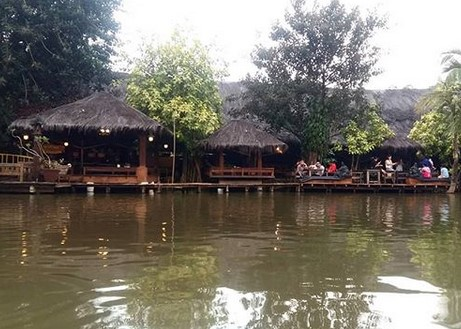
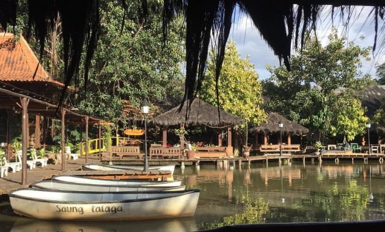
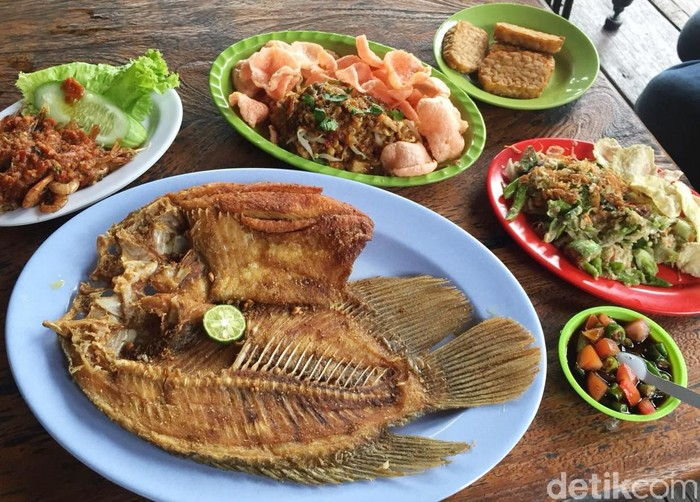
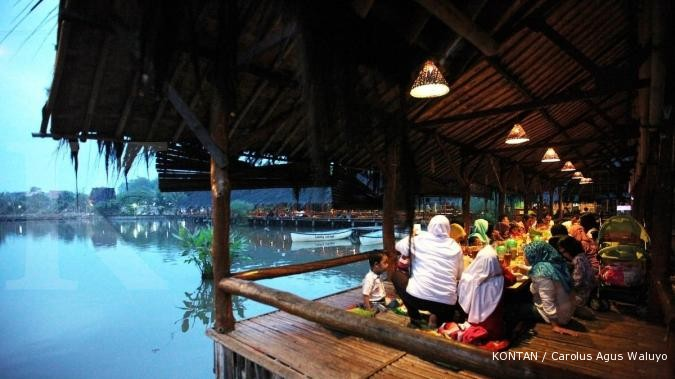
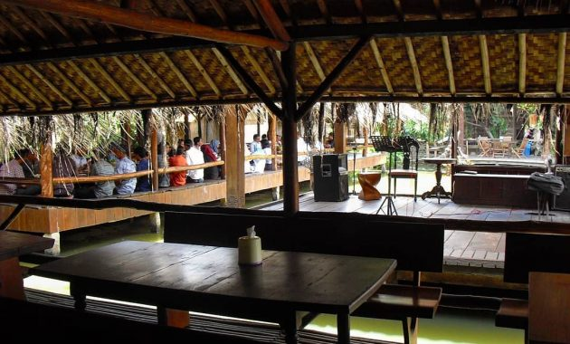
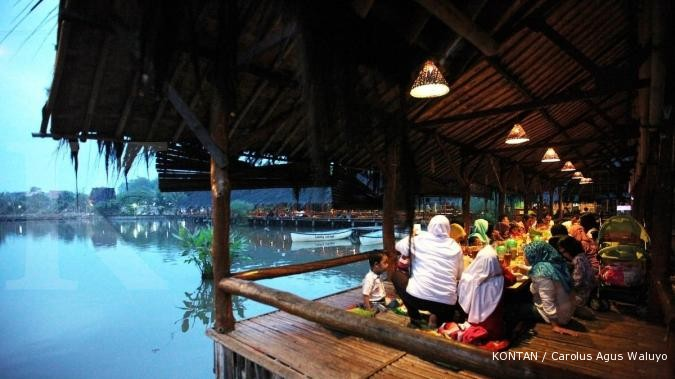
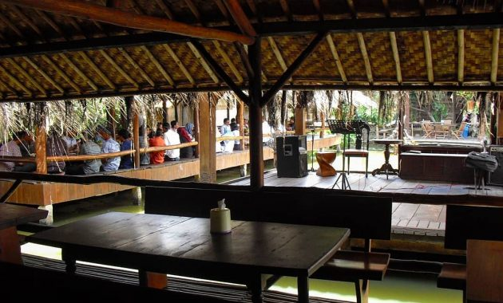

Detail Wisata Kuliner Saung Talaga
Gallery Foto
   



Deskripsi Fasilitas
restoran berkonsep saung di atas danau dengan fasilitas kolam pemancingan dan kolam renang
Alamat & Peta Lokasi
Jl. Raya Sawangan No.1, Rangkapan Jaya, Kec. Pancoran Mas, Kota Depok, Jawa Barat 16435
Testimony & Komentar
Ayu Ting Ting
Saung talaga, Jalan raya sawangan depok. Salah satu tempat kuliner rekomended di kawasan depok dan sekitarnya. Saya sudah lebih dari empat kali mengunjungi tempat ini dan tidak penah merasa bosan.
Mahmudi Ismail
Restoran ini menyediakan beragam menu seafood yang rasanya enak karena bahan mentah yang digunakan berkualitas dan segar. Tempatnya ok
Andini
Saya sering untuk datang ke sini dengan keluarga besar saya. Saya pikir ini adalah salah satu yang terbaik di resto bagi keluarga saya. Suasana adalah menyenangkan, dan mereka juga memiliki sebuah danau